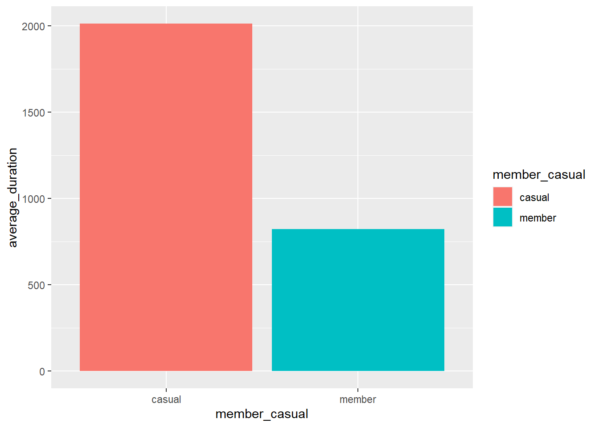
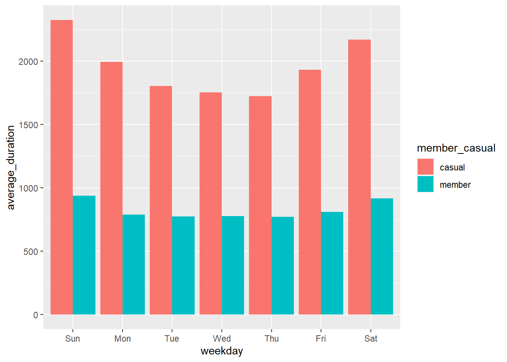

Data yang digunakan adalah data fiksi tentang sebuah perusahaan fiksi yang menawarkan akses berbayar terhadap penggunaan sepeda di stasiun tertentu. Data yang digunakan dapat didownload pada link disediakan oleh Motivate International Inc dan dilisensi pada link
library(tidyverse) #helps wrangle data## ── Attaching packages ─────────────────────────────────────── tidyverse 1.3.2 ──
## ✔ ggplot2 3.3.6 ✔ purrr 0.3.5
## ✔ tibble 3.1.8 ✔ dplyr 1.0.10
## ✔ tidyr 1.2.1 ✔ stringr 1.4.1
## ✔ readr 2.1.3 ✔ forcats 0.5.2
## ── Conflicts ────────────────────────────────────────── tidyverse_conflicts() ──
## ✖ dplyr::filter() masks stats::filter()
## ✖ dplyr::lag() masks stats::lag()library(lubridate) #helps wrangle date attributes##
## Attaching package: 'lubridate'
##
## The following objects are masked from 'package:base':
##
## date, intersect, setdiff, unionlibrary(ggplot2) #helps visualize data
library(dplyr)
library("hydroTSM")## Warning: package 'hydroTSM' was built under R version 4.2.2## Loading required package: zoo## Warning: package 'zoo' was built under R version 4.2.2##
## Attaching package: 'zoo'
##
## The following objects are masked from 'package:base':
##
## as.Date, as.Date.numeric
##
## Loading required package: xts## Warning: package 'xts' was built under R version 4.2.2##
## Attaching package: 'xts'
##
## The following objects are masked from 'package:dplyr':
##
## first, last
##
##
## Attaching package: 'hydroTSM'
##
## The following object is masked from 'package:tidyr':
##
## extractlibrary("lubridate") # Load lubridate packageData yang digrouping dimasukkan ke dalam RStudio Workspace
tripdata_202010 <- read_csv("dataset/202010-divvy-tripdata.csv")
tripdata_202011 <- read_csv("dataset/202011-divvy-tripdata.csv")
tripdata_202012 <- read_csv("dataset/202012-divvy-tripdata.csv")
tripdata_202101 <- read_csv("dataset/202101-divvy-tripdata.csv")
tripdata_202102 <- read_csv("dataset/202102-divvy-tripdata.csv")
tripdata_202103 <- read_csv("dataset/202103-divvy-tripdata.csv")
tripdata_202104 <- read_csv("dataset/202104-divvy-tripdata.csv")
tripdata_202105 <- read_csv("dataset/202105-divvy-tripdata.csv")
tripdata_202106 <- read_csv("dataset/202106-divvy-tripdata.csv")
tripdata_202107 <- read_csv("dataset/202107-divvy-tripdata.csv")
tripdata_202108 <- read_csv("dataset/202108-divvy-tripdata.csv")
tripdata_202109 <- read_csv("dataset/202109-divvy-tripdata.csv")Menggabungkan data Quarter menjadi 1 dataframe besar
all_trips <- rbind(tripdata_202010,
tripdata_202011,
tripdata_202012,
tripdata_202101,
tripdata_202102,
tripdata_202103,
tripdata_202104,
tripdata_202105,
tripdata_202106,
tripdata_202107,
tripdata_202108,
tripdata_202109)Mengecek data
glimpse(all_trips)## Rows: 5,136,261
## Columns: 13
## $ ride_id <chr> "ACB6B40CF5B9044C", "DF450C72FD109C01", "B6396B54A1…
## $ rideable_type <chr> "electric_bike", "electric_bike", "electric_bike", …
## $ started_at <dttm> 2020-10-31 19:39:43, 2020-10-31 23:50:08, 2020-10-…
## $ ended_at <dttm> 2020-10-31 19:57:12, 2020-11-01 00:04:16, 2020-10-…
## $ start_station_name <chr> "Lakeview Ave & Fullerton Pkwy", "Southport Ave & W…
## $ start_station_id <chr> "313", "227", "102", "165", "190", "359", "313", "1…
## $ end_station_name <chr> "Rush St & Hubbard St", "Kedzie Ave & Milwaukee Ave…
## $ end_station_id <chr> "125", "260", "423", "256", "185", "53", "125", "31…
## $ start_lat <dbl> 41.92610, 41.94817, 41.77346, 41.95085, 41.92886, 4…
## $ start_lng <dbl> -87.63898, -87.66391, -87.58537, -87.65924, -87.663…
## $ end_lat <dbl> 41.89035, 41.92953, 41.79145, 41.95281, 41.91778, 4…
## $ end_lng <dbl> -87.62607, -87.70782, -87.60005, -87.65010, -87.691…
## $ member_casual <chr> "casual", "casual", "casual", "casual", "casual", "…Membersihkan data null dan disimpan dalam dataframe baru
colSums(is.na(all_trips))## ride_id rideable_type started_at ended_at
## 0 0 0 0
## start_station_name start_station_id end_station_name end_station_id
## 523467 523781 567268 567501
## start_lat start_lng end_lat end_lng
## 0 0 4821 4821
## member_casual
## 0all_trips2 <- all_trips[complete.cases(all_trips), ]Menghapus data yang salah yaitu started_at melebihi ended_at
all_trips2 <- all_trips2 %>%
filter(all_trips2$started_at < all_trips2$ended_at)Membuat kolom date, month, day, year, day_of_week, hours, seasons
all_trips2$date <- as.Date(all_trips2$started_at) #The default format is yyyy-mm-dd
all_trips2$month <- format(as.Date(all_trips2$date), "%m")
all_trips2$day <- format(as.Date(all_trips2$date), "%d")
all_trips2$year <- format(as.Date(all_trips2$date), "%Y")
all_trips2$day_of_week <- format(as.Date(all_trips2$date), "%A")
all_trips2$hours <- hour(all_trips2$started_at)
all_trips2$seasons <- time2season(all_trips2$date, # Convert dates to seasons
out.fmt = "seasons")Mengecek dataframe
glimpse(all_trips2)## Rows: 4,350,732
## Columns: 20
## $ ride_id <chr> "ACB6B40CF5B9044C", "DF450C72FD109C01", "B6396B54A1…
## $ rideable_type <chr> "electric_bike", "electric_bike", "electric_bike", …
## $ started_at <dttm> 2020-10-31 19:39:43, 2020-10-31 23:50:08, 2020-10-…
## $ ended_at <dttm> 2020-10-31 19:57:12, 2020-11-01 00:04:16, 2020-10-…
## $ start_station_name <chr> "Lakeview Ave & Fullerton Pkwy", "Southport Ave & W…
## $ start_station_id <chr> "313", "227", "102", "165", "190", "359", "313", "1…
## $ end_station_name <chr> "Rush St & Hubbard St", "Kedzie Ave & Milwaukee Ave…
## $ end_station_id <chr> "125", "260", "423", "256", "185", "53", "125", "31…
## $ start_lat <dbl> 41.92610, 41.94817, 41.77346, 41.95085, 41.92886, 4…
## $ start_lng <dbl> -87.63898, -87.66391, -87.58537, -87.65924, -87.663…
## $ end_lat <dbl> 41.89035, 41.92953, 41.79145, 41.95281, 41.91778, 4…
## $ end_lng <dbl> -87.62607, -87.70782, -87.60005, -87.65010, -87.691…
## $ member_casual <chr> "casual", "casual", "casual", "casual", "casual", "…
## $ date <date> 2020-10-31, 2020-10-31, 2020-10-31, 2020-10-31, 20…
## $ month <chr> "10", "10", "10", "10", "10", "10", "10", "10", "10…
## $ day <chr> "31", "31", "31", "31", "31", "29", "29", "29", "29…
## $ year <chr> "2020", "2020", "2020", "2020", "2020", "2020", "20…
## $ day_of_week <chr> "Saturday", "Saturday", "Saturday", "Saturday", "Sa…
## $ hours <int> 19, 23, 23, 22, 19, 17, 9, 16, 16, 21, 18, 12, 8, 2…
## $ seasons <chr> "autumm", "autumm", "autumm", "autumm", "autumm", "…Terdapat kesalahan dalam day of week yaitu harinya 6
all_trips2$day_of_week <- ordered(all_trips2$day_of_week, levels=c("Sunday", "Monday", "Tuesday", "Wednesday", "Thursday", "Friday", "Saturday"))Menambah kolom “ride_length” yang berisi durasi pemakaian sepeda
all_trips2$ride_length <- difftime(all_trips2$ended_at,all_trips2$started_at)
all_trips2$ride_length <- as.numeric(as.character(all_trips2$ride_length))Membersihkan kembali data yang telah ditambah kolom baru, yaitu menghapus data yang memiliki “ride_length” negatif
all_trips2 <- all_trips2[!(all_trips2$start_station_name == "HQ QR" | all_trips2$ride_length<0),]Deskriptif analysis durasi pemakaian (“ride_length”)
summary(all_trips2$ride_length)## Min. 1st Qu. Median Mean 3rd Qu. Max.
## 1 433 762 1359 1379 3356649Membandingkan membership dan durasi
aggregate(all_trips2$ride_length ~ all_trips2$member_casual, FUN = mean)## all_trips2$member_casual all_trips2$ride_length
## 1 casual 2012.3765
## 2 member 821.9262aggregate(all_trips2$ride_length ~ all_trips2$member_casual, FUN = sum)## all_trips2$member_casual all_trips2$ride_length
## 1 casual 3951922997
## 2 member 1961874662Membandingkan membership, durasi dan day
aggregate(all_trips2$ride_length ~ all_trips2$member_casual + all_trips2$day_of_week, FUN = mean)## all_trips2$member_casual all_trips2$day_of_week all_trips2$ride_length
## 1 casual Sunday 2322.5672
## 2 member Sunday 936.1720
## 3 casual Monday 1992.7622
## 4 member Monday 787.7697
## 5 casual Tuesday 1802.6559
## 6 member Tuesday 775.0020
## 7 casual Wednesday 1752.4906
## 8 member Wednesday 777.9496
## 9 casual Thursday 1723.6577
## 10 member Thursday 771.2929
## 11 casual Friday 1931.6675
## 12 member Friday 808.9091
## 13 casual Saturday 2167.0959
## 14 member Saturday 917.5835Perbandingan membership
all_trips2 %>%
group_by(member_casual) %>% #groups by usertype and weekday
summarise(number_of_rides = n()) %>%
arrange(member_casual) # sorts## # A tibble: 2 × 2
## member_casual number_of_rides
## <chr> <int>
## 1 casual 1963809
## 2 member 2386923Perbandingan membership dan musim
all_trips2 %>%
group_by(seasons) %>% #groups by usertype and weekday
summarise(number_of_rides = n()
,member_casual) %>% # calculates the average duration
arrange(seasons) # sorts## `summarise()` has grouped output by 'seasons'. You can override using the
## `.groups` argument.## # A tibble: 4,350,732 × 3
## # Groups: seasons [4]
## seasons number_of_rides member_casual
## <chr> <int> <chr>
## 1 autumm 1180394 casual
## 2 autumm 1180394 casual
## 3 autumm 1180394 casual
## 4 autumm 1180394 casual
## 5 autumm 1180394 casual
## 6 autumm 1180394 casual
## 7 autumm 1180394 casual
## 8 autumm 1180394 casual
## 9 autumm 1180394 casual
## 10 autumm 1180394 casual
## # … with 4,350,722 more rowsPerbandingan membership dan bulan
all_trips2 %>%
group_by(member_casual, month) %>% #groups by usertype and weekday
summarise(number_of_rides = n()) %>% # calculates the average duration
arrange(member_casual, month) # sorts## `summarise()` has grouped output by 'member_casual'. You can override using the
## `.groups` argument.## # A tibble: 24 × 3
## # Groups: member_casual [2]
## member_casual month number_of_rides
## <chr> <chr> <int>
## 1 casual 01 14690
## 2 casual 02 8613
## 3 casual 03 75641
## 4 casual 04 120418
## 5 casual 05 216823
## 6 casual 06 304184
## 7 casual 07 369401
## 8 casual 08 341463
## 9 casual 09 292920
## 10 casual 10 122317
## # … with 14 more rowsPerbandingan membership dan hari
all_trips2 %>%
group_by(member_casual, day_of_week) %>% #groups by usertype and weekday
summarise(number_of_rides = n()) %>% # calculates the average duration
arrange(member_casual, day_of_week) # sorts## `summarise()` has grouped output by 'member_casual'. You can override using the
## `.groups` argument.## # A tibble: 14 × 3
## # Groups: member_casual [2]
## member_casual day_of_week number_of_rides
## <chr> <ord> <int>
## 1 casual Sunday 381824
## 2 casual Monday 219104
## 3 casual Tuesday 203610
## 4 casual Wednesday 208587
## 5 casual Thursday 222581
## 6 casual Friday 278722
## 7 casual Saturday 449381
## 8 member Sunday 295641
## 9 member Monday 324047
## 10 member Tuesday 351332
## 11 member Wednesday 366051
## 12 member Thursday 362053
## 13 member Friday 345847
## 14 member Saturday 341952Perbandingan membership dan jam
all_trips2 %>%
group_by(hours) %>% #groups by usertype and weekday
summarise(number_of_rides = n()) %>% # calculates the average duration
arrange(hours) # sorts## # A tibble: 24 × 2
## hours number_of_rides
## <int> <int>
## 1 0 61062
## 2 1 41979
## 3 2 25175
## 4 3 13522
## 5 4 11635
## 6 5 30901
## 7 6 85372
## 8 7 152934
## 9 8 178753
## 10 9 157290
## # … with 14 more rowsPerbandingan membership, day, durasi
all_trips2 %>%
mutate(weekday = wday(started_at, label = TRUE)) %>% #creates weekday field using wday()
group_by(member_casual, weekday) %>% #groups by usertype and weekday
summarise(number_of_rides = n() #calculates the number of rides and average duration
,average_duration = mean(ride_length)
,sum_duration = sum(ride_length)) %>% # calculates the average duration
arrange(member_casual, weekday) # sorts## `summarise()` has grouped output by 'member_casual'. You can override using the
## `.groups` argument.## # A tibble: 14 × 5
## # Groups: member_casual [2]
## member_casual weekday number_of_rides average_duration sum_duration
## <chr> <ord> <int> <dbl> <dbl>
## 1 casual Sun 381824 2323. 886811881
## 2 casual Mon 219104 1993. 436622179
## 3 casual Tue 203610 1803. 367038773
## 4 casual Wed 208587 1752. 365546747
## 5 casual Thu 222581 1724. 383653462
## 6 casual Fri 278722 1932. 538398216
## 7 casual Sat 449381 2167. 973851739
## 8 member Sun 295641 936. 276770826
## 9 member Mon 324047 788. 255274402
## 10 member Tue 351332 775. 272283010
## 11 member Wed 366051 778. 284769220
## 12 member Thu 362053 771. 279248895
## 13 member Fri 345847 809. 279758800
## 14 member Sat 341952 918. 313769509Visualisasi 1 jumlah_member_casual
all_trips2 %>%
group_by(member_casual) %>%
summarise(number_of_rides = n()) %>%
arrange(member_casual) %>%
ggplot(aes(x = member_casual, y = number_of_rides, fill = member_casual)) +
geom_col(position = "dodge")Visualisasi 2 avg_durasi_member_casual
all_trips2 %>%
group_by(member_casual) %>%
summarise(average_duration = mean(ride_length)) %>%
arrange(member_casual) %>%
ggplot(aes(x = member_casual, y = average_duration, fill = member_casual)) +
geom_col(position = "dodge")
Visualisasi 3 jumlah_rideable_type
all_trips2 %>%
group_by(rideable_type) %>%
summarise(number_of_rides = n()) %>%
arrange(rideable_type) %>%
ggplot(aes(x = rideable_type, y = number_of_rides, fill = rideable_type)) +
geom_col(position = "dodge")Visualisasi 4 avg_durasi_rideable_type
all_trips2 %>%
group_by(rideable_type) %>%
summarise(average_duration = mean(ride_length)) %>%
arrange(rideable_type) %>%
ggplot(aes(x = rideable_type, y = average_duration, fill = rideable_type)) +
geom_col(position = "dodge")Visualisasi 5 sum_durasi_rideable_type
all_trips2 %>%
group_by(rideable_type) %>%
summarise(sum_duration = sum(ride_length)) %>%
arrange(rideable_type) %>%
ggplot(aes(x = rideable_type, y = sum_duration, fill = rideable_type)) +
geom_col(position = "dodge")Visualisasi 6 number_of_rides_by_member_casual_weekday
all_trips2 %>%
mutate(weekday = wday(started_at, label = TRUE)) %>%
group_by(member_casual, weekday) %>%
summarise(number_of_rides = n()) %>%
arrange(member_casual, weekday) %>%
ggplot(aes(x = weekday, y = number_of_rides, fill = member_casual)) +
geom_col(position = "dodge")## `summarise()` has grouped output by 'member_casual'. You can override using the
## `.groups` argument.Visualisasi 7 average_duration_by_member_casual_weekday
all_trips2 %>%
mutate(weekday = wday(started_at, label = TRUE)) %>%
group_by(member_casual, weekday) %>%
summarise(average_duration = mean(ride_length)) %>%
arrange(member_casual, weekday) %>%
ggplot(aes(x = weekday, y = average_duration, fill = member_casual)) +
geom_col(position = "dodge")## `summarise()` has grouped output by 'member_casual'. You can override using the
## `.groups` argument.
Visualisasi 8
all_trips2 %>%
mutate(weekday = wday(started_at, label = TRUE)) %>%
group_by(rideable_type, weekday) %>%
summarise(number_of_rides = n()
,average_duration = mean(ride_length)
,sum_duration = sum(ride_length)) %>%
arrange(rideable_type, weekday) %>%
ggplot(aes(x = weekday, y = number_of_rides, fill = rideable_type)) +
geom_col(position = "dodge")## `summarise()` has grouped output by 'rideable_type'. You can override using the
## `.groups` argument.Visualisasi 9
all_trips2 %>%
mutate(weekday = wday(started_at, label = TRUE)) %>%
group_by(rideable_type, weekday) %>%
summarise(number_of_rides = n()
,average_duration = mean(ride_length)) %>%
arrange(rideable_type, weekday) %>%
ggplot(aes(x = weekday, y = average_duration, fill = rideable_type)) +
geom_col(position = "dodge")## `summarise()` has grouped output by 'rideable_type'. You can override using the
## `.groups` argument.write.csv2(all_trips2, file = ‘Divvy_Trips_Gabungan_Final_1.csv’)